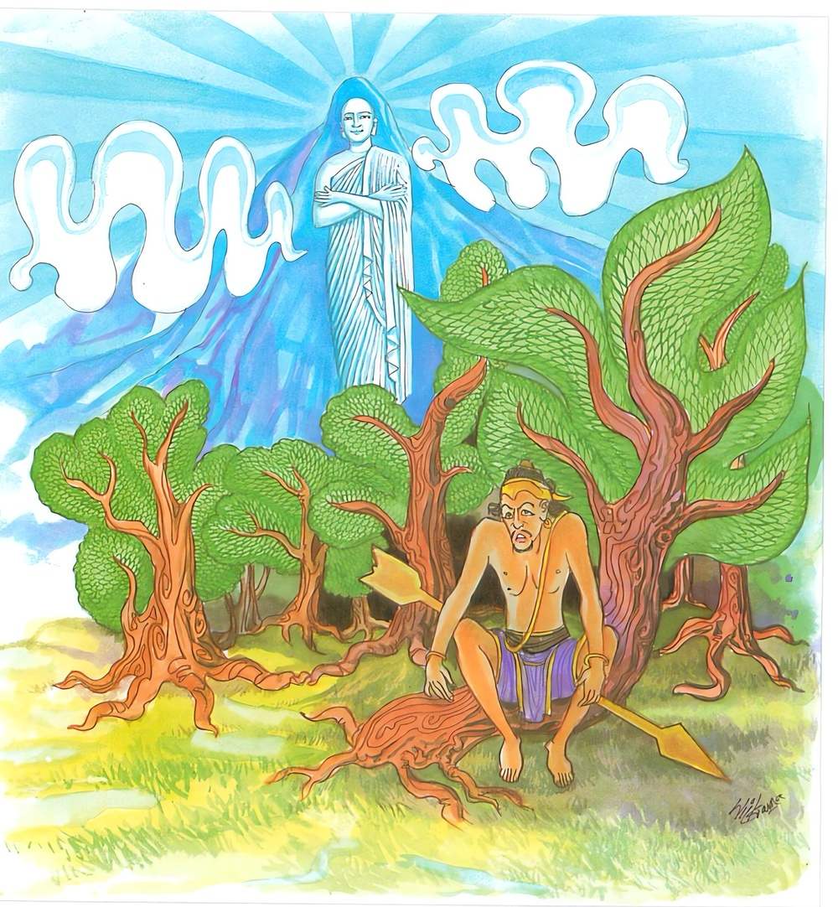

21-8 චුල්ල සුභද්රාවගේ කථා පුවත
මෙම කතාව සද්ධර්ම සාගරයෙන් ද කියවන්න.
දූරෙ සන්තො පකාසන්ති හිමවන්තො’ව පබ්බතො
අසන්තෙත්ථ න දිස්සන්ති රත්තිං ඛිත්තා යථා සරා.
(උත්සන්න කුසල් මුල් ඇති, භාවිත භාවනා ඇති) සාධූහු දුරැ සිටියාහු ද, හිමවත්පව්ව මෙන් බුදුනුවණට ප්රකට වෙති. මෙහි (මේ ලොව ම ගරු කොට සිතන) අඥාන පුද්ගලයෝ රෑ විදුනා ලද ඊයක් මෙන් නො පැණෙත්.

"දුරෙ සන්තොති'' යන මේ ධර්ම දේශනය ශාස්තෲන් වහන්සේ සැවැත් නුවර ජේතවනාරාමයේ වැඩ සිටියදී අනේ පිඬු සිටුවරයාගේ දු වූ චුල්ල සුභද්රාව නිමිති කරගෙන දේශනා කරන ලදී.
අනේ පිඬු සිටුවරයාගේ ළමා අවදියේ සිට උග්ගනගරවාසී උග්ගනම් සිටු පුත්රයෙක් මිත්රව සිටියේය. ඔවුහු එකම ආචාර්ය කුලයක ශිල්ප ඉගෙන ගනිද්දී එකිනෙකා මෙසේ කථිකා කරගත්හ. අපි වයසට ගිය කල දු පුතුන් ඉපදුනවිට යමෙක් පුතුට දුවක් සොයයිද අනෙකා විසින් දියණිය දියයුතුය. යනුවෙනි. මේ දෙදෙනාම වැඩුන පසු ඒ ඒ නගරවල සිටුතනතුරුවලට පත්වුහ. මෙ අතර එක්කලෙක උග්ග සිටුවරයා වෙළදාමේ යෙදෙන්නේ පන්සියයක් රැගෙන සැවැත් නුවරට ගියේය. අනේ පිඬු සිටුවරයා තමාගේ දු චුල්ල සුභද්රා කැඳවා දරුව ඔබේ පියාවන උග්ගසෙට්ඨි පැමිණියේය. ඔහුට කළයුතු සියළු කාර්යයන් ඔබට පැවරේයයි අණ කළේය. ඇය යහපතැයි පිළිගෙන ඔහු පැමිණ දින සිට සිය අතින්ම බත් ව්යඤජන ආදිය පිළියෙල කරයි. මඳ විලවුන් ආදිය සපයා දෙයි. භෝජන කාලයේ දී ඔහුට ස්නානය සඳහා ජලය පිළියෙළ කරයි. නාන තැන්සිට සියළු කටයුතු මැනවින් ඉටු කරයි. උග්ග සිටුවරයා ඇගේ ආචාර සම්පත්තිය දැක පැහැදුන සිත් ඇත්තේ එක් දිනක් අනේ පිඬු සිටුවරයා සමග සතුටු කථාවේ යෙදෙමින් සිටියේ අපි තරුණ අවදියේ දී මෙබඳු කථිකාවක් කළෙමු. සිහිකොට චූල සුභද්රාව තමන්ගේ පුතුට යෝජනා කළේය. ඔහු ප්රකෘතියෙන්ම මිථ්යා දෘෂටිකය. එනිසා බුදුන්ට මේ කරුණු දක්වා - සිටිවිට බුදුහු උග්ග සිටුවරයාගේ උපනිශ්රය සම්පත් දැක අනුමත කළ විට, බිරිඳ සමග කතිකාකොට ඔහුගේ වචනය පිළිගෙන දවසක් තබා දුවනිය විශාඛාවට බාර දී උනන්දු කරවන්නේ ධනංජය සිටුවරයාමෙන් මහත් සත්කාර කොට සුභද්රාවට කථා කොට දරුව නැන්දාගේ කුලගෙයි වසන අයනම් ඇතුළත ගිනි පිටකිරීම නොකළ යුතුය. ආදි ධනඤජය සිටුවරයා විසාඛාවට දෙන ලද ක්රමයටම අවාද දසය දී. ඉදින් මගේ දුවගේ දොසක් ඇතිවේද තොප විසින් ශුද්ධ කල යුතුයයි කෙළෙඹියන් අටදෙනෙක් වෙන්කරදී ඇය පිටත්ව යන දිනයේ බුද්ධ ප්රමුඛ මහා සංඝයාට මහදන් දී පෙර භවයේදී දියණිය කළ සුචරිත ඵල විභූතිය ලොවට හෙළි කොට දක්වන්නාක් මෙන් මහත් සත්කාරයෙන් දුවණිය පිටත්කළ හැරියේය. ඇය අනුපිළිවෙලින් උග්ග නගරයට පැමිණි කළ නැන්දනියන් ගේ කුළයේ අය සමග මහජනයා පෙරගමන් කළහ. ඇයද තම ශ්රී සම්පත් ප්රකට කිරීමට, විශාඛාව මෙන් මුළු නගරයට තමන් ප්රදර්ශනය කරන්නේ රථයේ සිට නගරයට පිවිස නාගරිකයන් එවන ලද තුටු පඬුරු ගෙන සුදුසු ලෙස ඒ ඒ අයට යවන්න. මුළු නුවර තමන්ගේ ගුණ හා ඒකාබද්ධ කළාය. මංගල දවස්හි වනාහි නැන්දනියෝ ළමයින්ට සත්කාර කරමින් පැමිණ අපේ ශ්රමණයන්ට වදින්නැයි යැවුවාය. ඇය ලජ්ජාවෙන් නග්නවු නිවටුන් දැකීමට නොහැකිව යාමට කැමති නොවුවාය. ඔහු (මාමා) නැවත නැවත යවාද ඇය විසින් ප්රතික්ෂේප කලේ කිපී ඇය පිටකරන්නැයි කුටුම්බිකයි ශ්රමණයින් කැඳවා මේ කරුණ දන්වා සිටියේය. ඔවුහු ඇගේ නිදොස්බව දැන සිටුවරයාට දැනුම් දුන්හ. ශ්රමණයින් ලජ්ජා නැති අයයයි නො වදී උග්ගසේන භාර්යාවට දැනුම් දුන්නේය. ඕතොමෝ ඔබේ ශ්රමණයෝ කෙබඳුද ඔවුන්ගේ ප්රසංශනීය බව කෙසේද යයි ඇය කැඳවා විමසුවේය. ඔබේ ශ්රමණයෝ කවරාකාරද ඔබ බෙහෙවින් පසසන ඒ ශ්රමණයන්ගේ සිල්කෙසේදද මවුන්ගේ පැවතුම්ද මට කියා දෙන්න.
අනතුරුව සුභද්රාව බුදුන්ගේ ද බුද්ධ ශ්රාවකයින්ගේද ගුණ ප්රකාශ කරමින් මෙලෙස පැවසුවාය.
ඉන්ද්රිය සංවරය, මනස සන්සුන්ය - යන එන සිටින විට බිමට හරවාගත් ඇස් වෙති. ශ්රමණයෝ පමණට කථාකරන අයයි - මගේ ශ්රමණයෝ එබඳුය. මගේ ශ්රමණයන් වහන්සේලා කයින් පිරිසිදුය. වචනයෙන් පිරිසිදුය. නොකැළල් අයයි මනස පිරිසිදුය. මගේ ශ්රමණයෝ එබඳුය.
ලෝකයේ මිනිස්සු ලාභයෙන් උඩගුවේ. අලාභයෙන් යට පත්වූ පැවතුම්ඇත්තේ වී හිත් දුෂිත වේ. මගේ ශ්රමණයෝ ලාභ අලාභ දෙක්හිදීම එක සමානය. වෙනස් නොවේ. ලෝ වැස්සෝ යසසින් සම්පත් වලින් උඩඟු වේ. සම්පත් පිරිහුණු විට කළකිරේ. දුෂ්ය වේ. මාගේ ශ්රමණයෝ යස අයස දෙකෙහිදීම එකම ස්ථානය වෙනස් නොවේ ප්රශංසා වෙන් ලෝකයා උඩගුවේ. නින්දාවෙන් පහන්වේ දුකට පත්වේ. එහෙත් මගේ ශ්රමණයෝ නින්දා ප්රසංසා දෙකේදිම සම ස්ථානව සිටිති.
සැපයෙන් ලෝකයා උඩගුවේ. දුකෙන් අවනත වේ. සැපදුක් දෙකේදීම මගේ ශ්රමණයෝ එක හා සමාන සිටිති. මෙබඳු වචන වලින් නැන්දනිය. සතුටු කලාය.
අනතුරුව ඔබේ ශ්රමණයින් අපටද දැක්වීමට හැකිදැයි කියා හැකි බව පැවසුවිට එසේනම් යම්සේ අපට පෙනෙන ලෙසට කරන්නැයි පැවසුවිට ඇය බුදුන් ප්රධාන මහා සංඝයාට මහදනක් සකසා ප්රාසාදයේ මතුමහලේ සිට ජේතවනාරාමයට අභිමුඛව සකසා පසඟ පිහිටුවා වැඳ බුදුගුණ සිහිකර සුවඳ දුම් පූජාකර ස්වාමීනි හෙට දානය සඳහා බුද්ධ ප්රමුඛ භික්ෂු සංඝයාට ආරාධනා කරමි. මේ දැනුම් දීමෙන් බුදුන්ට ආරාධනා කළබව දැනගනීවා යි ද සමන් මල් අදැමිටක් අහසට දැමීය. මල් අහසින් ගොස් සිටු පිරිස මැද ධර්මය දේශනා කරන බුදුන්ගේ මතුවේ මල් වියනක් ලෙස පිහිටියේය. එකෙණෙහි අනේ පිඬුසිටුවරයාද ධර්ම කථාවක් අසා හෙට දනට ආරාධනා කළේය. බුදුහු ගෘහපතිය මම බාරගන්නා ලදී. පැවසුවිට ස්වාමීනි මම පළමුව පැමිණ ආරාධනා කළෙමි. මට පළමු කිසිවෙක් පැමිණියේද විමසුවිට, චුල්ලසුභද්රා ආරාධනා කළේයයි පවසා ස්වාමීනි චුල්ල සුභද්රා යොදුන් එකසිය විස්සක් දුර වාසය කරයි. එසේය ගෘහපතිය දුරස්ව සිටියද සත් පුරුෂයෝ ඉදිරියේ සිටියාසේ ප්රකාශ කරති පවසා මේ ගාථාව පැවසුවාය.
සිටිතත් කොතැන යහපන්දන දුර බැහැර
සමනළ කන්ද මෙන් පැහැපත් වෙයි නිතර
යහපත් නොවන අය ලඟ සිටියත් වැතිර
ගීයක් වැන්න රෑ විදි රජයන අඳුර
සත්පුරුෂයෝ දුර සිටියේ වී නමුත් හිමාලය පර්වතය මෙන් පෙනෙත්. අසත් පුරුෂයෝ ළග සිටියද, අඳුරේ විදි ඊතළ මෙන් නොපෙනේ.
එහි සන්තෙ - රාගාදි ක්ලේශයන්ගෙන් වෙන්වූ නිසා බුද්ධාදී උතුමෝ සන්ත නම් වේ. මෙහි දී පුර්ව බුදුවරු කරන ලද අධිකාර ඇති මතුවු කුශල මුල් ඇත්තේ පුරුදු කරන ලද භාවනා ඇත්තේ යන අදහසයි. පකාසන්ති දුරසිටියද බුදුවරුන්ගේ ඤාණපථය ප්රකට වේ. හිමවන්නෝච යම් සේ තුන්යොදුන් දහසක් පළල යොදුන් පන්සියයක් උස කුළුපර්වත අසුහාර දහසක් ඇති හිමවත දුරවුවත් ළග පිහිටියේ වෙයි. අසන්තෙත්ථා - දිටඨ ධර්ම ගරුක පරලොව දිනු ආමිස ඇස් ඇති ජීවත්විමට පැවිදිවු බාල පුද්ගලයෝ අසනත නම් ඔවුහු බුදුන්ගේ දකුණු දණමඬලය අසල සිටියද දක්නට නොලැබේ. රත්තිංබිතතා - චතුරංග සමන්නාගත සනඅන්ධ කාරයේ විදි හී තලයක් මෙන් නොපෙන්නේ. සමහර උපනිශ්රය සම්පත් පූර්ව භේද නිසා අභාවයට යාමෙක් නොපෙනේ යන අර්ථයි. දේශනාවසානයේ බොහෝ දෙනා සෝවාන් ඵල ආදී මාර්ග ඵලයන්ට පැමිණියාහුය.
සක්දෙව් රජ බුදුහු චූලසුභද්රාව ගේ ආරාධනය පිළිගත් බව දැන විශ්වකර්ම දෙව් පුතුට අණකලේය. කුළු ගෙවල් පන්සියයක් මවා හෙට දින බුදුන් ප්රමුඛ සංඝයා උග්ගහ නගරයට පමුණුවන ලෙසට, - විශ්වකර්ම දෙව් දෙවන දිනයේ කුළුගෙවල් පන්සියයක් නියමිත කොට දෙව්රම දොරටුව අබියස සිටියේය. බුදුහු පන්සියයක් රහතන් වහන්සේලා පමණක් තෝරාගෙන පිරිවර සහිත කූඨාගාරවල වාඩිවී උග්ගනගරයට වැඩම කළහ. උන්ගෙ සිටුවරයාද පිරිවර සහිතව සුභද්රාව කියන ලද ක්රමය අනුව බුදුන් වඩින මග බලමින් සිටින්නේ බුදුහු මහත් ශ්රි සම්පතින් වඩිනු දැක වැඳ පැහැදුන සිතින් මල් ආදියෙන් පුදා පිරිවර සහිතව පිළිගෙන වැඳ මහදන් දී නැවත නැවත ආරාධනා කර සත් දිනක් මහදන් පුජාකලේය. බුදුරජාණන් වහන්සේද සුදුසු බව සලකා ධර්මය දේශනා කළහ. ඔහු මුකොට අසුහාරදහසක් ප්රාණීන්ට ධර්මාව බෝධය විය. බුදුහු සුභද්රාවට අනුග්රහ පිණිස නුඹ මෙහි වසන්නැයි අනුරුද්ධ තෙරුන් නතර කර සැවැත් නගරයටම වැඩම කළහ. එතැන්සිට එම නගරය ශ්රද්ධා සම්පන්න නගරයක් වුයේය.